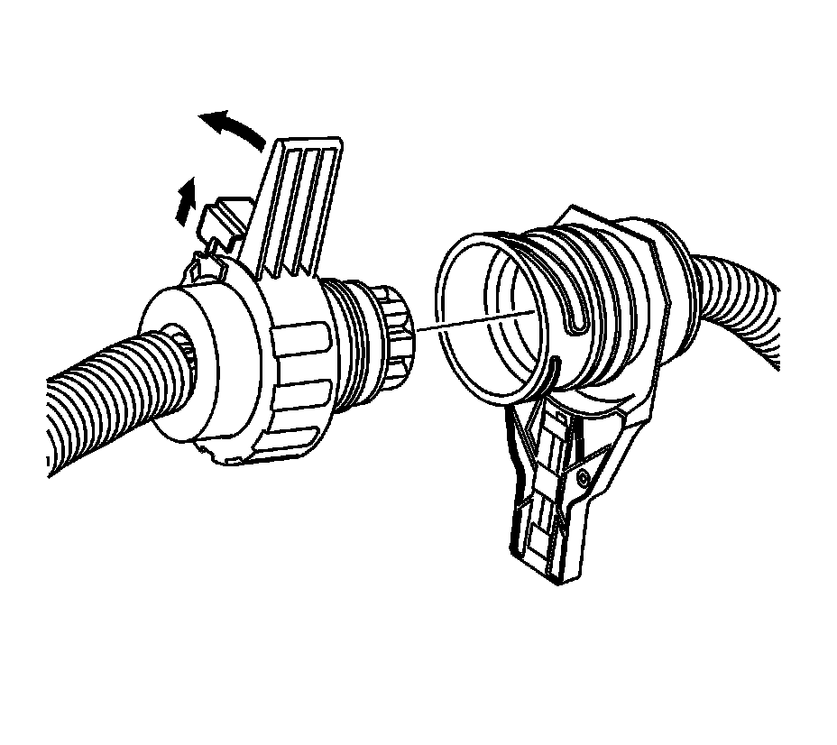

Automatic Transmission Inline 16-Way Connector Description
Automatic Transmission Inline 16-Way Connector Description
Automatic Transmission Inline 16-Way Connector Description:

The transmission electrical connector is an important part of the transmission operating system. Any interference with the electrical connection can cause the transmission to set diagnostic trouble codes or affect proper operation. The following items can affect the electrical connection:
^ Bent pins in the connector from rough handling during connection and disconnection
^ Wires backing away from the pins or coming uncrimped, in the external wiring harness
^ Dirt contamination entering the connector when disconnected
^ Transmission fluid leaking into the connector, wicking up into the external wiring harness and degrading the wire insulation
^ Moisture intrusion in the connector
^ Low pin retention in the external connector from excessive connection and disconnection of the wiring connector assembly
^ Pin corrosion from contamination
^ Damaged connector assembly
Remember the following points:
^ Limit twisting or wiggling the connector during removal. Bent pins can occur.
^ Do not pry the connector off with a screwdriver or other tool.
^ Whenever the transmission external wiring connector is disconnected from the internal harness and the engine is operating, DTCs will set. Clear these DTCs after reconnecting the external connector.
Use the following procedure to disconnect the engine side of the 16-way connector from the transmission side:
1. Unlock the slide lock on the engine wiring harness connector.
2. Rotate the connector lever counterclockwise and remove the connector from the electrical connector passage sleeve.
Use the following procedure to reconnect the engine side of the 16-way connector to the transmission side:
1. Orient the alignment slot on the engine side of the connector with the alignment tab on the electrical connector passage sleeve.
2. Slide the engine side connector through the electrical connector passage sleeve and into the transmission side connector.
3. Rotate the connector lever clockwise until the connector is fully seated.
4. Lock the slide lock on the connector.